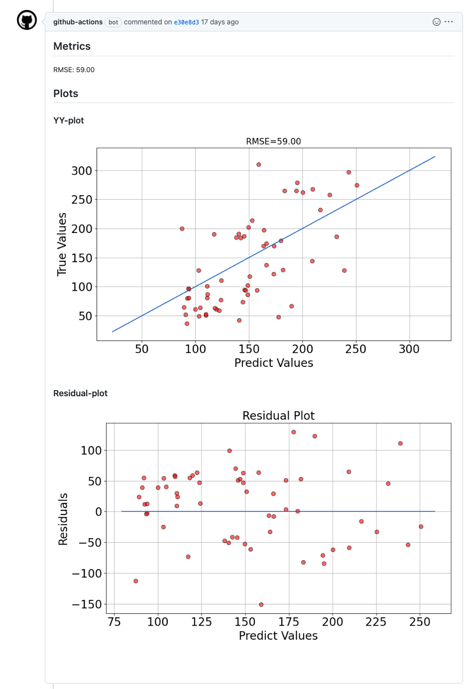

はじめに
Continuous Machine Learning (CML) という機械学習モデルの CI ツールを個人プロジェクトで導入したので，その紹介をしようと思います．
機械学習プロジェクトでテストを考える時に，大きく3つあると思っています．
- ソフトウェアのテスト: 単体テストや結合テストなどコードが意図通りの挙動を示すかどうかを確認するテスト
- ツール: pytest, unittest …など
- 機械学習モデルのテスト: 機械学習モデルが正常に動作するか，評価指標でスコアを得ることができるかなどを確認するテスト
- ツール: CML (with DVC) …など
- データのテスト: データが想定しているスキーマに従っているか，データの分布や範囲が意図したデータかなどを確認するテスト
- ツール: dbt, Dataform …など
このうち今回は，「機械学習モデルのテスト」に着目してこれをどのように実施するかを紹介しています．
※ 今回，DVC は使っていません．機械学習モデルは使用するデータに依存する部分がかなり大きいので，DVC と組み合わせて実施するのが望ましいですが，今回は簡易的なテストデータを用意して，CML を実施しています．
Continuous Machine Learning (CML) とは？
Continuous Machine Learning (CML) は，Iterative.ai が開発している機械学習プロジェクトの CI/CD を実現する OSS であり，特徴としては以下のような点があります．
- モデルの学習と評価の結果をレポート（markdown 形式）にして自動生成できる（メトリクスや図など）
- Github Actions と連携して，Pull Requests 時に自動的に実行する仕組み
- 任意のクラウド環境で実験を実行することが可能
これは例えば，次のような課題を解決するためのサポートになると思います．
- PoC でデータサイエンティストが作成したコードをプロダクション環境に載せた際に，モデルの学習と評価が適切に行われているかをどのように確認するか？
- モデルが前回から向上していることをどのように確認するか？（これについては DVC との連携も必要）
- モデルの再学習の際にも同じようなチェックが行われるのか？
- etc…
CML は PR ベースでモデルの学習と評価を行い，適切な意思決定に繋げるのに役立つツールだと思います．
個人プロジェクトへの導入
機械学習によるモデル作成を行っている tasks.py の if __name__ == "__main__": 以下が CML 用に用意したコードになります．
if __name__ == "__main__":以下のコードを抜粋
if __name__ == "__main__":
def plot_yy(y_valid, y_pred, metrics, savepath):
"""Vizualize the results using yy-plot
"""
y_max = np.max(y_valid)
y_min = np.min(y_valid)
# calculate max and min of y_pred
predict_y_max = np.max(y_pred)
predict_y_min = np.min(y_pred)
# use the smallest and largest value of either of both y_valid and y_pred
# as the range of the vertical axis horizontal axis
axis_max = max(y_max, predict_y_max)
axis_min = min(y_min, predict_y_min)
# margin of 5% of the length
axis_max = axis_max + (axis_max - axis_min) * 0.05
axis_min = axis_min - (axis_max - axis_min) * 0.05
plt.figure(figsize=(10, 6))
plt.subplots_adjust(wspace=0.2, hspace=0.3)
plt.scatter(y_pred, y_valid, c='r', s=50, zorder=2, edgecolors=(0, 0, 0), alpha=0.6)
plt.plot([axis_min, axis_max], [axis_min, axis_max], c="#1560bd")
plt.xlabel('Predict Values', fontsize=20)
plt.ylabel('True Values', fontsize=20)
plt.title(r'RMSE=%.2f' % (metrics), fontsize=15)
plt.tick_params(labelsize=20)
plt.tight_layout()
plt.grid(True)
plt.savefig(savepath, dpi=100, bbox_inches='tight', pad_inches=0.1)
plt.close()
def plot_residual(y_valid, y_pred, savepath):
residual = y_pred - y_valid
xmax = np.max(y_pred) + (np.max(y_pred) - np.min(y_pred)) * 0.05
xmin = np.min(y_pred) - (np.max(y_pred) - np.min(y_pred)) * 0.05
plt.figure(figsize=(10, 6))
plt.subplots_adjust(wspace=0.2, hspace=0.3)
plt.scatter(y_pred, residual, c='r', s=50, zorder=2, edgecolors=(0, 0, 0), alpha=0.6)
plt.hlines(y=0, xmin=xmin, xmax=xmax, color='#1560bd')
plt.title('Residual Plot', fontsize=20)
plt.xlabel('Predict Values', fontsize=20)
plt.ylabel('Residuals', fontsize=20)
plt.tick_params(labelsize=20)
plt.tight_layout()
plt.grid(True)
plt.savefig(savepath, dpi=100, bbox_inches='tight', pad_inches=0.1)
plt.close()
params = {
"model_id": "sample_test",
"dataset_id": "test_diabetes",
"features": ["age", "bmi", "bp", "s1", "s2", "s3", "s4", "s5", "s6"],
"target": "target"
}
dataset_path = 'test/data/' + params['dataset_id'] + '.csv'
df = pd.read_csv(dataset_path)
result = train(df, params)
rmse = result['metrics']['rmse']
# Record the metrics
outfile = "data/metrics.txt"
if not os.path.isdir("data"):
os.mkdir("data")
with open(outfile, "w") as f:
f.write("RMSE: " + f"{rmse:.2f}" + "\n")
# Plot results
y_valid = result['y_true']
y_pred = result['y_pred']
savepath_yy = "data/yy_plot.png"
plot_yy(y_valid, y_pred, metrics=rmse, savepath=savepath_yy)
savepath_residual = "data/residual_plot.png"
plot_residual(y_valid, y_pred, savepath=savepath_residual)
こちらのコードがレポートにする処理になります．metrics.txt というテキストファイルを一時的に作成し，そこにメトリクスの結果を書き込みます．また，作成した回帰モデルによる実測-予測プロットの図（Y-Y プロット）や残差プロットの図を png ファイルでこちらも一時的に保存し，レポートに出力します．
# Record the metrics
outfile = "data/metrics.txt"
if not os.path.isdir("data"):
os.mkdir("data")
with open(outfile, "w") as f:
f.write("RMSE: " + f"{rmse:.2f}" + "\n")
# Plot results
y_valid = result['y_true']
y_pred = result['y_pred']
savepath_yy = "data/yy_plot.png"
plot_yy(y_valid, y_pred, metrics=rmse, savepath=savepath_yy)
savepath_residual = "data/residual_plot.png"
plot_residual(y_valid, y_pred, savepath=savepath_residual)
レポートに出力したいファイルを用意できたら，CML を使うために cml.yaml ファイルを .github/workflows 以下に作成します．公式のユースケースを参考にしても良いと思います．
以下は，今回のプロジェクトで実行した CML になります．
name: train-my-model
on:
push:
paths:
- 'async-processing/app/consumer/tasks.py'
pull_request:
branches:
- dev
jobs:
train-model:
runs-on: ubuntu-latest
steps:
- uses: actions/checkout@v2
- uses: iterative/setup-cml@v1
- name: Set up Python
uses: actions/setup-python@v2
with:
python-version: '3.8'
- name: Train model
env:
repo_token: ${{ secrets.GITHUB_TOKEN }}
S3_BUCKET_NAME: ${{ secrets.S3_BUCKET_NAME }}
S3_PATH_NAME: ${{ secrets.S3_PATH_NAME }}
S3_MODEL_PATH_NAME: ${{ secrets.S3_MODEL_PATH_NAME }}
run: |
cd async-processing
docker compose up -d
docker compose exec -T consumer python3 consumer/tasks.py
# Create CML report
echo "## Metrics" >> report.md
cat app/data/metrics.txt >> report.md
echo "## Plots" >> report.md
echo "### YY-plot" >> report.md
cml-publish app/data/yy_plot.png --md --title 'YY Plot' >> report.md
echo "### Residual-plot" >> report.md
cml-publish app/data/residual_plot.png --md --title 'Residual Plot' >> report.md
cml-send-comment report.md
CML が実行されるタイミングとして，tasks.py が変更された時と dev ブランチに PR が作成された時の2つを設定していますが，こちらは適宜状況に合わせるのが良いと思います．今回は単純な RandomForest のモデルなので簡単に短時間で回すことができますが，画像系のモデル学習など学習に時間もリソースもかかる場合（特にクラウド環境で CML を動かす場合），コード修正の度に実行されるのは適切でないかもしれません．
run パートは，docker compose up で立ち上げたコンテナ環境内で tasks.py を実行して，出力されたテキストファイルと図を markdown 形式のファイルに出力しています．ここで，echo を挟むことで header を付けたりもできます．
cml-publish: レポートに画像を表示させるコマンドcml-send-comment: github の PR にコメントととして markdown レポートを作成するコマンド
結果はこのような形のレポートになります．

実際使ってみた感想
個人的に良いと思う部分と微妙だなと思う部分を挙げておきます．
- 良い点
- 作成した学習の結果や評価を PR 上で議論できる点
- 認識のズレなどを議論できるかなと思います
- モデルの結果を見て，デプロイするかどうかなど意思決定に繋げることができる点
- 再現性を一定担保することができる点
- 作成した学習の結果や評価を PR 上で議論できる点
- 微妙な点
- 必要なものを出力してからレポート作成する必要がある点
- 結果のテキストファイルや図を出力しておく必要があるので，そこが面倒だったり，何を出すかの検討も必要
- どういった基準で CML を実行するか
- どのタイミングで CML を実行するか？（push 時？ merge 時？）
- 重たいモデルを実行する場合，全てのデータで学習させてテストすべきか？
- etc…
- 必要なものを出力してからレポート作成する必要がある点
微妙な点として挙げた内容も一部は，利用する側で決めるべきルールやポリシーだったりするので，ここはどういった情報があれば「意思決定」をする上で判断材料となるのかを整理することでクリアになる部分かもしれないです．
おわりに
今回は，機械学習モデルのためのテストとして，CML という機械学習プロジェクトで CI/CD を行うツールを使ってみたのでその紹介になります．
また，今回は使っていないですが，DVC という同じ Iterative.ai が開発しているデータのバージョン管理を行うツールを CML と組み合わせて使う方法もあるので，ここも次回実験して使ってみたいと思います．これを使うことで前回の結果との差分なども見ることができるので，より良い「CI/CD for ML」が実現できるかなと思います．
P.S. Twitter でコメント頂いたので，追記しておきます．
確かに，モデルの学習を Push 時や PR 時に毎回回すのは大変なので，学習時に適用するのではなく，学習済みのモデルに対して適当なサブセットのデータを用意してそれに対する推論結果をレポート出力するのが軽量で試しやすそうだなと思いました．
プルリクコメントでモデルの評価結果を出力してくれる GitHub Action。学習まで回すのは大変そうなので、サブセットの推論結果くらいに留めた方が良さそう？ https://t.co/5QkaHvQYxt
— ken_jimmy (@ken_jimmy) May 2, 2022
参考
- Continuous Machine Learning (CML)
- Data Version Control (DVC)
- masatakashiwagi/teamaya/async-processing